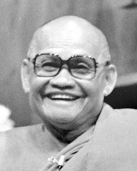

5. “I work as a psychotherapist and it seems to be useful to have a more or less stable self, a more or less stable ego, to be able to transcend the ego.” Answered by Ajahn Amaro. [Western psychology ] [Self-identity view] [Liberation] // [Mark Epstein] [Virtue] [Happiness] [Conditionality] [Language] [Ajahn Chah] [Conventions]
Reference: “The Wisdom of the Ego” in Head and Heart Together by Ajahn Ṭhānissaro.
Sutta: SN 1.25: “Skillful, knowing the world’s parlance, he uses such terms as mere expressions.”
1. Comment: I was thinking about our obsession to create things. We create our world out of the things that we create. So Nibbāna being no thing-ness seems just right. [Proliferation] [Nibbāna] [Non-identification]
Response by Ajahn Amaro. [Volitional formations] [Conventions] [Impermanence] [Philosophy] [Aggregates] [Insight meditation] [Suffering]
Quote: “The things of this world are merely conventions of our own making …” — Ajahn Chah in Convention and Liberation. [Ajahn Chah]
2. “This state of nothingness or no-thing-ness is kind of liberating. Is that something that can be quick or something we attain and is forever?” Answered by Ajahn Amaro. [Non-identification] [Liberation] // [Insight meditation] [Long-term practice] [Arahant] [Ajahn Chah]
Reference: Nibbāna for Everyone by Ajahn Buddhadāsa.
3. “Does it mean that these three stages [of awakening] are still shaky? Like they can still go back to thingness?” Answered by Ajahn Amaro. [Stages of awakening] [Arahant] // [Stream entry] [Realms of existence] [Impermanence] [Once return] [Sensual desire] [Ill-will] [Non-return] [Fetters] [Ajahn Chah]
Reference: Śhūrangama Sūtra, Fifty Skandha Demon States.
2. “Something that I’ve noticed is that my wish to translate something differently at one point in my practice changes later when I realize, ‘Hmm … perhaps I’m just trying to get around the point.’ I feel uncomfortable with that translation and then later on realize I have to practice with this one. Does that sometimes happen to you?” Answered by Ajahn Amaro. [Hearing the true Dhamma] [Translation ] // [Truth]
Story: Jack Kornfield translates for Ajahn Chah at Insight Meditation Center and puts his own spin on the precepts. Ajahn Chah figures it out. [Jack Kornfield] [Ajahn Chah] [Joseph Kappel] [Insight Meditation Society] [Precepts]
8. “Coming back to Arahantship, as Chris was mentioning, you’re not supposed to talk about your attainments, but is there a notion of how likely it is happening nowadays in the monastic community?” Answered by Ajahn Amaro. [Arahant] [Vinaya] [Saṅgha] // [Ajahn Chah]
Quote: “Why do you want to know if I’m an arahant? It would be better for your to explore why you are not.” — Ajahn Chah. [Ajahn Chah]
3. “How do you tell the difference between genuine insight and conceptual fabrication?” Answered by Ajahn Amaro. [Insight meditation] [Proliferation] // [Cessation of Suffering] [Spiritual friendship] [Suffering] [Lawfulness] [Doubt] [Stream entry] [Self-reliance]
Follow-up: “The fact that it can’t be verified intuitively makes me uncomfortable. I can see how that would lead to delusion of falsity.” [Delusion]
Story: Ajahn Sumedho asks Ajahn Chah whether he [Ajahn Sumedho] is a stream enterer. [Ajahn Sumedho] [Ajahn Chah]
3. “When Luang Por Sumedho talks about resting in awareness in which everything is included, is this connected to the subject part [of non-duality] or is this neither there nor in between (Ud 1.10)?” Answered by Ajahn Amaro. [Ajahn Sumedho] [Knowing itself] [Non-identification] [Equanimity] [Advaita Vedanta] // [Buddhist identity] [Not-self] [Language] [Ajahn Chah] [Wat Pah Nanachat] [Unestablished consciousness] [Brahma gods]
Recollection: When Ajahn Amaro first arrived at Wat Pah Nanachat, a monk recommended Zen Mind, Beginner’s Mind. [Ajahn Amaro] [Zen]
5. “In one of the first readings [Session 2, question 2 and Session 3, question 3] you mentioned momentary Nibbāna. How do jhānas relate to momentary Nibbāna?” Answered by Ajahn Amaro and Ajahn Pasanno. [Nibbāna] [Jhāna] // [Clinging] [Ajahn Chah] [Liberation]
Sutta: MN 113.21: Don’t be content with jhāna.
Sutta: MN 26.15-16: Āḷāra Kālāma and Uddaka Rāmaputta.
4. “I’ve been pondering Ajahn Chah’s phrase, ‘Right but not true; true but not right.’ I’ve never been able to figure our ‘Right but not true.’ …” Answered by Ajahn Amaro. [Ajahn Chah] [Truth] // [Clear comprehension]
Quote: “You are right in fact but wrong in Dhamma.” — Ajahn Chah. [Ajahn Chah] [Dhamma]
Story: Ajahn Sumedho reports Ajahn Buddhadāsa’s different approach to Vinaya to Ajahn Chah. [Ajahn Sumedho] [Ajahn Buddhadāsa] [Vinaya] [Ajahn Chah]
Story: Ajahn Sumedho criticizes an outspoken monk’s loud speech at Pāṭimokkha. The monk leaves Wat Pah Pong soon after. [Harsh speech] [Admonishment/feedback] [Ajahn Chah]
2. “Does Ajahn Chah’s phrase, ‘Right in fact but wrong in Dhamma,’ imply that there is an objective world of facts and then a world above that which is Dhamma?” Answered by Ajahn Amaro and Ajahn Pasanno. [Ajahn Chah] [Truth] [Dhamma] // [Etymology] [Conventions] [Ajahn Sumedho] [Harsh speech]
Note: This phrase was discussed during the previous session.
Stories about the Buddha’s disciples who had killed people. [Great disciples] [Killing]
Suttas: MN 86: Aṅgulimāla Sutta; the story of Kuṇḍalakesī (Commentary to Dhp 102-103, Dhamma Verses Commentary translated by E. W. Burlingame and Ānandajoti Bhikkhu, p. 500).
Recollection: The lay disciple Pansak would sometimes show up drunk after work and spend the night under Ajahn Chah’s kuti. Recounted by Ajahn Pasanno. [Lay supporters] [Intoxicants] [Ajahn Chah]
Story: The monk Por Suey had been a hit man hired to kill Ajahn Chah. [Ajahn Chah lineage] [Crime] [Ajahn Chah] [Wat Pah Nanachat]
3. “I don’t have any clear memory of past lives, and I’m happy not to overly speculate about that. But some monks suggested that you need to take on the doctrine of rebirth as part of Right View. Do you have any thoughts about this?” Answered by Ajahn Amaro and Ajahn Karuṇadhammo. [Rebirth ] [Right View] // [Self-reliance] [Ajahn Amaro] [Four Noble Truths] [Ajahn Chah] [Becoming]
Sutta: MN 117.6: Definition of Right View.
Quote: “You don’t have to believe in past lives or future lives in order to be a practicing Buddhist, do you?” — The Dalai Lama. Quoted by Ajahn Amaro. [Dalai Lama] [Buddhist identity]
Story: Ajahn Chah describes the supernatural beings who live at Wat Pah Pong to two sincere Dhamma practitioners, then refuses to answer inquiries about this topic by a group from Bangkok. Told by Ajahn Pasanno. [Ajahn Chah] [Non-human beings] [Wat Pah Pong]
4. “When developing disenchantment and dispassion by seeing the way things are, how do we not go to the extreme of aversion or the craving of unbecoming?” Answered by Ajahn Pasanno and Ajahn Karuṇadhammo. [Disenchantment] [Dispassion] [Aversion] [Craving not to become] // [Suffering] [Four Noble Truths]
Story: Ajahn Chah prods Ajahn Pasanno to reflect on suffering. Told by Ajahn Pasanno. [Ajahn Chah] [Ajahn Pasanno]
5. “How do we distinguish the nuances of happiness and suffering?” Answered by Ajahn Pasanno. [Happiness] [Suffering] // [Language]
Reflection: Any language is always a problem.
Quote: “The language of Dhamma is the language of feeling.” — Ajahn Chah. [Ajahn Chah] [Dhamma] [Feeling]
1. “Would you say that with the ending of greed, hatred, and delusion that these are eradicated and don’t arise anymore?” Answered by Ajahn Pasanno. [Unwholesome Roots] [Cessation] // [Knowledge and vision] [Cause of Suffering] [Buddha] [Arahant]
Follow-up: “We hear sometimes that it arises, but the person isn’t grasping it.”
Comment by Ajahn Karuṇadhammo: This is similar to Ajahn Chah’s declaration, “Yes, I have a lot of anger, but I don’t pick it up.” [Ajahn Chah] [Aversion] [Relinquishment]
Story: Ajahn Chah explains that the many lines in his palm mean that he had lots of suffering. [Ajahn Chah] [Suffering] [Ajahn Vīradhammo] [Teaching Dhamma] [Discernment]
2. Comment: There’s the suggestion that just four hours of sleep is enough, and I know that some people can cope with that, but I’ve always struggled with not getting much sleep, and it feels like torture if I force myself to stay awake. [Devotion to wakefulness ]
Response by Ajahn Pasanno. [Ajahn Chah] [Fasting] [Truth] [Ajahn Pasanno] [Wat Pah Nanachat] [Moderation in eating]
3. “Was there a Winter Retreat where Ajahn Chah had the community practice midnight vigils every night? Were you there at that time?” Answered by Ajahn Pasanno. [Ajahn Chah] [Devotion to wakefulness] [Ajahn Pasanno] // [Rains retreat] [Sitter's practice]
Quote: “Ajahn Chah fired up. That’s pretty scary.” [Ajahn Chah]
1. “Could [the principles in AN 3.102] also be related to practicing ānāpānasati?” Answered by Ajahn Pasanno. [Investigation of states] [Right Effort] [Mindfulness of breathing]
Quote: “Dhamma is that which is just right.” — Ajahn Chah. [Ajahn Chah] [Dhamma]
Quote: “Dhamma is neither high nor low, not dark or light, not tall or short. It’s just right.” — Ajahn Kinaree. [Ajahn Kinaree] [Middle Path]
3. “Typically it seems that Luang Por Sumedho uses more passive language [in regards to abandoning defilements]. Lately I’ve come across teachings from Ajahn Geoff and Ajahn Chah that use much more aggressive language, even ‘go to war with your defilements.’ It seems contradictory to me.” Answered by Ajahn Pasanno. [Ajahn Sumedho] [Ajahn Ṭhānissaro] [Ajahn Chah] [Language] [Unwholesome Roots] // [Teaching Dhamma] [Culture/West ]
Recollection: A Westerner asks Ajahn Chah why he scolds the Thai monks more than the Western monks. [Ajahn Chah] [Monastic life] [Fierce/direct teaching] [Guilt/shame/inadequacy]
Comment by Sister Ñāṇasirī: “In Thailand, we can be extremely lax, so we need a little bit more push.” [Culture/Thailand]
Recollection: Ajahn Chah would rarely speak in personal terms. Instead he tried to get people to reflect on how we can take Dhamma as a refuge. Recounted by Ajahn Kaccāna and Ajahn Pasanno. [Ajahn Chah] [Dhamma] [Ajahn Mahā Boowa]
1. “Where is the path [of stream entry etc.] clearly defined?” Answered by Ajahn Pasanno and Ajahn Karuṇadhammo. [Stages of awakening] // [Aids to Awakening] [Stream entry] [Recollection/Saṅgha] [Ajahn Chah]
Reference: Amaravati Chanting Book, p. 7: “The four pairs, the eight kinds of noble beings.”
Sutta: MN 70.20-21: Definitions of faith follower and Dhamma follower.
2. “You mentioned that the Tathāgata is a bit harsh in discipline [in MN 70]. What is the practical side of this?” Answered by Ajahn Pasanno and Ajahn Kaccāna. [Buddha/Biography] [Fierce/direct teaching] // [Teaching Dhamma] [Ajahn Chah] [Ajahn Pasanno] [Mahāyāna] [Sutta]
Sutta: MN 34: The Shorter Discourse on the Cowherd.
3. “I have the impression that Ajahn Chah concentrated on direct realization and the practice of meditation. He didn’t recommend reading too much, but instead reading our mind. You mentioned the 37 faculties/tools to purify our mind. For a lay person, this is a long study. Is it enough for us as laypeople to just have the practice of being here now?” Answered by Ajahn Pasanno. [Ajahn Chah] [Meditation] [Aids to Awakening] [Lay life] [Present moment awareness] // [Paul Breiter] [Four Noble Truths] [Right View] [Faith] [Learning]
Quote: “There needs to be a catalyst. We have to challenge the mind. That’s where the structure of the teachings is important.” [Teaching Dhamma] [Delusion]
Follow-up: “If we practice meditation, does understanding come naturally?” [Discernment]
Response by Ajahn Pasanno and Ajahn Karuṇadhammo. [Liberation] [Spiritual friendship] [Appropriate attention] [Tranquility] [Relinquishment]
Story: Ajahn Sumedho spends his first year as a monk in solitary meditation reading only Word of the Buddha by Venerable Ñāṇatiloka (pdf unavailable). [Ajahn Sumedho] [Monastic life]
Follow-up: “Having kids is a big structure.” [Children]
Response by Ajahn Pasanno.
6. Quote: “Whenever you have feelings of love or hate for anything whatsoever, these will be your aides and partners in building pārami. The Buddha Dhamma is not to be found in moving forwards, nor in moving backwards, nor in standing still. This, Sumedho, is your place of non-abiding.” — Ajahn Chah’s only letter to Ajahn Sumedho. Quoted by Ajahn Pasanno. [Ajahn Chah] [Ajahn Sumedho] [Greed] [Aversion] [Perfections] [Dhamma] [Middle Path ] // [Relinquishment] [Knowing itself]
1. Teaching by Ajahn Pasanno: The satipaṭṭhāna insight formula is a pointer to atammayatā. [Right Mindfulness] [Insight meditation] [Non-identification] // [Ajahn Buddhadāsa] [Translation]
Sutta: MN 10.37: “Or else mindfulness that ‘there are mind objects’ is simply established in him to the extent necessary for bare knowledge and awareness. And he abides independent, not clinging to anything in the world.
Quote: “You don’t have to go and study every tree in the forest.” — Ajahn Chah. [Ajahn Chah] [Similes]
Reference: Mindfulness: A Practical Guide to Awakening by Joseph Goldstein (commercial).
Follow-up: “Do you think that the not-self perception is the precursor to the experience of atammayatā?” [Not-self] [Relinquishment]
4. “What does contemplating the body internally and externally mean [in MN 10.5]?” Answered by Ajahn Pasanno. [Mindfulness of body] // [Mindfulness] [Clear comprehension] [Ajahn Chah]
2. “Can you give a practical antidote in terms of how we can relinquish the attachment to view?” Answered by Ajahn Pasanno. [Clinging] [Views] [Relinquishment] // [Suffering] [Ajahn Chah]
4. “How does atammayatā relate to Ajahn Chah’s simile about oil and water, the mind and the mind objects being separate?” Answered by Ajahn Amaro and Ajahn Pasanno. [Non-identification] [Ajahn Chah] [Similes ] [Nature of mind]
Quote: “Inside is Dhamma, outside is Dhamma, everything is Dhamma.” — Ajahn Chah. Quoted by Ajahn Amaro. [Ajahn Chah] [Dhamma]
Quote: “All symbols and similes are partially relevant. All analogies are partial.” — Ajahn Amaro. [Symbolism/metaphor]
2. “Are unworldly feelings to be treated the same? (referring to MN 18.8, ‘nothing is found there to delight in.’) Some of them appear in the cessation cycle, for example joy. They’re pleasant spiritual feelings.” Answered by Ajahn Amaro. [Feeling] [Happiness] [Skillful qualities] // [Jhāna] [Formless attainments] [Conditionality] [Ajahn Chah]
3. “When the mind rests in awareness and it’s not going out, it feels very natural. It knows that this is the place to be, but still over and over again, no matter how clearly it sees this pure quality and peaceful quality, it still goes out to thoughts. The mind keeps going out. It keeps grabbing, it keeps identifying, even though it knows this is dukkha.” Answered by Ajahn Amaro and Ajahn Pasanno. [Knowing itself] [Clinging] [Suffering] [Long-term practice] // [Noting] [Mindfulness of mind] [Idealism] [Discernment] [Food] [Feeling] [Birth]
Quote: “It’s just that much.” — Ajahn Chah. [Ajahn Chah]
6. “According to what you read in the book (The Island by Ajahn Pasanno and Ajahn Amaro, p. 123-124; MN 18.16-19), first there is contact and then phassa and vedanā. So first when we have contact there is no self yet. For example, if I contact something painful, at that time I feel I have no self, and then when I feel painful there is still no self, but then I feel like, ‘Oh, I don’t like this painfulness,’ the desire not to have it. Is feeling more self related with desire? It always comes together or not always?” Answered by Ajahn Amaro. [Contact] [Feeling] [Pain] [Self-identity view] [Craving] // [Clinging] [Mindfulness of feeling] [Ascetic practices] [Heedfulness]
Sutta: Ud 1.10: Bāhiya.
Sutta: AN 10.58: “Rooted in interest are all things. …”
Reference: Catastrophe/Apostrophe by Ajahn Amaro, p. 139.
Quote: “Just a few more things for you to let go of.” — Ajahn Chah’s response to Jack Kornfield’s description of his travels and meditation experiences. [Ajahn Chah] [Jack Kornfield] [Relinquishment] [Conceit] [Restlessness and worry]
3. “Would you say that way of reflecting using non conceptual thought is more effective or more penetrative than using verbalisation?” Answered by Ajahn Amaro and Ajahn Pasanno. [Insight meditation] [Directed thought and evaluation] // [Ajahn Chah] [Ajahn Jāgaro] [Culture/West]
Reference: “What is Contemplation?”, Collected Teachings of Ajahn Chah, p. 475.
2. “Could you clarify what you said about the mind and objects of awareness and how freedom from attachments is possible?” Answered by Ajahn Amaro and Ajahn Pasanno. [Nature of mind] [Knowing itself] [Liberation] // [Non-identification] [Insight meditation] [Ajahn Mun]
Simile: Oil and water. — Ajahn Chah. [Similes] [Ajahn Chah]
Follow-up: “I like flowers, but I need to stop buying flowers. How can this help?” Answered by Ajahn Amaro. [Clinging] [Feeling] [Volitional formations]
4. Question about associating with and clinging to wholesome and conducive environments. Answered by Ajahn Amaro and Ajahn Pasanno. [Skillful qualities] [Clinging] [Spiritual friendship] // [Suffering] [Knowing itself] [Discernment] [Amaravati] [Ajahn Chah]
Quote: “If you seek for security in what is insecure, you are bound to suffer.” — Ajahn Chah. Quoted by Ajahn Amaro. [Ajahn Chah] [Impermanence]
Quote: “Wanting what’s good without stop. That’s a disease of the mind.” — Ajahn Mun, Ballad of Liberation from the Khandhas. Quoted by Ajahn Amaro. [Ajahn Mun] [Craving]
Quote: “Live simply; be natural.” — Ajahn Chah. Quoted by Ajahn Amaro. [Ajahn Chah] [Simplicity]
Story: A sincere practitioner’s family complains about his way of being mindful. Told by Ajahn Amaro. [Mindfulness] [Everyday life] [Pace of life]
1. Comment: The separation between the mind and the sense/mind objects can be helpfully contemplated at multiple levels of acuity. Contributed by Ajahn Kaccāna. [Nature of mind] [Knowing itself] [Sense bases] // [Nibbāna] [Ajahn Chah]
Sutta: AN 11.9.
Reference: Stillness Flowing by Ajahn Jayasaro, pp. 90-91.
Response by Ajahn Amaro. [Hearing the true Dhamma] [Perception] [Etymology]
Quote: “The Five Khandhas exist, but they aren’t real. The Dhamma is real, but it doesn’t exist.” — Ajahn Paññāvaḍḍho. [Ajahn Paññāvaḍḍho] [Aggregates] [Dhamma]
Response by Ajahn Pasanno.
Quote: “Bright, loud, and mobile is the false; subtle and indistinct is the true.” — Master Hsuan Hua to Ajahn Amaro in a dream. Quoted by Ajahn Amaro. [Master Hsuan Hua] [Ajahn Amaro] [Dreams] [Truth]
10. “If you are constantly around someone who engages you with prolonged and agitated discussion, how do you handle that?” Answered by Ajahn Amaro and Ajahn Pasanno. [Idle chatter] // [Mindfulness] [Clear comprehension] [Admonishment/feedback]
Sutta: MN 2: Sabbāsava Sutta.
Quote: “Never give feedback to your fellow samaṇas before the meal.” — Ajahn Chah. Quoted by Ajahn Pasanno. [Ajahn Chah] [Monastic life]
Quote: “We can be completely mindful of taking initiative. Our capacity to act is part of the way things are.” — Ajahn Amaro. [Right Action ] [Discernment] [Right Mindfulness] [Buddha/Biography]
5. Story: Ajahn Chah explains the many lines on his palm: “Yeah, I’ve had a lot of suffering. Otherwise I wouldn’t be able to teach you.” Told by Ajahn Pasanno. [Ajahn Chah] [Suffering] [Teaching Dhamma] // [Ajahn Vīradhammo]
6. Quote: “Scary ride, eh?” — Ajahn Chah. Quoted by Ajahn Amaro. [Ajahn Chah] [Fear] // [Jack Kornfield] [Geography/Thailand]
7. “What is the difference between unsupported and unsupportive [consciousness]?” Answered by Ajahn Amaro and Ajahn Pasanno. [Unestablished consciousness] // [Direct experience] [Ajahn Sumedho] [Self-identity view] [Appropriate attention]
Reference: The Island by Ajahn Pasanno and Ajahn Amaro, p. 133.
Quote: “We say the mind is empty, but it’s actually full of wisdom.” — Ajahn Chah. Quoted by Ajahn Amaro. [Ajahn Chah] [Emptiness] [Discernment]
Reference: Wisdom Develops Samādhi by Ajahn Mahā Boowa
3. Reflections by Ajahn Amaro and Ajahn Pasanno about the Dhamma and Vinaya aspects of dependence. [Dhamma] [Vinaya] [Dependence] // [Middle Path] [Four Noble Truths]
Sutta: Snp 752-753: “There is danger in dependence.” [Clinging]
Quote: “The Dhamma is all about letting go, and the Vinaya is all about holding on. When you figure out how these work together, you’ll be fine.” — Ajahn Chah. Quoted by Ajahn Amaro. [Ajahn Chah] [Ajahn Sumedho] [Relinquishment]
6. Recollection: Ajahn Chah’s advice for establishing mindfulness in the midst of strong emotions. Recounted by Ajahn Amaro and Ajahn Pasanno. [Ajahn Chah] [Mindfulness] [Emotion] // [Ajahn Amaro] [Food] [Suffering] [Conditionality] [Equanimity] [Mindfulness of body] [Greed]
Story: Ajahn Chah eats 37 mangoes. [Ajahn Chah]
3. “Is there a difference between citta and poo roo?” Answered by Ajahn Pasanno and Ajahn Amaro. [Heart/mind ] [Knowing itself] [Nature of mind] // [Thai] [Language] [Proliferation] [Dhamma] [Buddha] [Ajahn Amaro] [Dhamma books]
Quote: “If there’s anything left, just throw it to the dogs.” — Ajahn Chah. Quoted by Ajahn Amaro. [Ajahn Chah] [Relinquishment]
4. Story: Huineng evades his pursuers with a koan. Told by Ajahn Amaro. [Koan] [Huineng]
Follow-up: “Do you know why Huineng returned after sixteen years?”
Recollection: Ajahn Buddhadāsa translated a few Chinese Buddhist texts into Thai. [Ajahn Buddhadāsa] [Translation] [Ajahn Chah]
1. Background of “What is Contemplation?“ [Ajahn Chah] [Ajahn Jāgaro] [Wat Pah Nanachat]
2. Comment: Ajahn Ṭhānissaro has made a more literal translation of “What is Contemplation?” called “The Knower.” Contributed by Ajahn Kaccāna. [Ajahn Ṭhānissaro] [Ajahn Chah] [Translation]
4. “Are mindfulness of mind and contemplating a subject such as impermanence two different approaches?” Answered by Ajahn Amaro and Ajahn Pasanno. [Mindfulness of mind] [Recollection] // [Ajahn Chah] [Language] [Directed thought and evaluation] [Appropriate attention] [Lawfulness]
Reference: “What is Contemplation?”, Collected Teachings of Ajahn Chah, pp. 475-479.
Quote: “Your best contemplation is quite thoughtless.” — Ajahn Pasanno. [Tranquility]
Reflection by Ajahn Pasanno: Yoniso manasikāra is a way of paying attention to the process of experience. [Pāli] [Characteristics of existence]
7. Comment: The translation of the Nibbāna Sutta (Ud 8.3) in The Island renders paññāyati as ‘discerned;’ the Amaravati Chanting Book, p. 49 translates it as ‘possible.’ Contributed by Ajahn Kaccāna. [Discernment] [Translation] [Chanting]
Response by Ajahn Amaro and Ajahn Pasanno.
Quote: “If you can’t go forward, if you can’t go backwards, if you can’t stand still, where do you go?” — Ajahn Chah. Quoted by Ajahn Amaro and Ajahn Pasanno. [Ajahn Chah] [Ajahn Sumedho] [Koan]
Sutta: Ud 8.1.
8. Ajahn Amaro recollects and reflects on the receipt of Ajahn Chah’s only letter to Ajahn Sumedho (quoted in The Island by Ajahn Pasanno and Ajahn Amaro, p. 164). [Ajahn Chah] [Ajahn Sumedho]
Reference: Collected Teachings of Ajahn Chah, p. 339.
2. Simile from Ajahn Chah about desire: “Are you going to eat the coconut shells?” Related by Ajahn Amaro. [Ajahn Chah] [Desire] [Similes] // [Right Effort]
Reference: Collected Teachings of Ajahn Chah, p. 280.
7. “When the mind feels quiet and peaceful, but there’s still something niggling away that doesn’t feel quite right, how do you work with that?” Answered by Ajahn Pasanno. [Tranquility] [Suffering] // [Patience] [Truth] [Self-reliance] [Conditionality] [Faith] [Perfections]
Recollection: It was frustrating being a disciple of Ajahn Chah and going to him with all your problems. He would just tell us to be patient. [Ajahn Chah]
1. Story: A Tibetan monk expresses appreciation for Ajahn Chah’s 1979 visit to Manjushri Institute. Told by Ajahn Pasanno. [Manjushri Institute] [Ajahn Chah] [Gratitude] // [Ajahn Pasanno] [Tudong]
2. Comment by Ajahn Kaccāna: It’s wonderful to hear Ajahn Chah’s brutal honesty about what it’s like being a teacher. [Ajahn Chah] [Teaching Dhamma]
Reference: Food for the Heart (Wisdom Publications) by Ajahn Chah (commercial) p. 333.
Response by Ajahn Pasanno.
2. “When Ajahn Chah reached full liberation, did he wait two years just to be sure?” Answered by Ajahn Pasanno and Ajahn Amaro. [Ajahn Chah] [Liberation] // [Delusion] [Doubt]
Simile from Ajahn Chah: “To me that’s just the chattering of the birds.” Related by Ajahn Amaro. [Ajahn Chah] [Similes]
Reflection by Ajahn Pasanno: People get infatuated and enthralled by attainment. [Craving] [Meditation/Results] [Ajahn Chah] [Relinquishment]
Quote: “[Ajahn Chah’s] duty was to try to teach people Dhamma, as opposed to being something for anybody.” — Ajahn Pasanno. [Ajahn Chah] [Teaching Dhamma] [Becoming]
5. “I was trying to imagine what it would be like to look into the world through the eyes of an arahant. Something like looking through The Matrix or looking at people as children …” Answered by Ajahn Pasanno and Ajahn Amaro. [Arahant]
Quote: “What is the mind of an arahant like?”—“Only compassion.” — Ajahn Mahā Boowa. Quoted by Ajahn Pasanno. [Ajahn Mahā Boowa] [Compassion]
Reflection by Ajahn Pasanno: Ajahn Chah’s form of compassion could be pretty demanding sometimes. [Ajahn Chah] [Fierce/direct teaching] [Patience] [Humor]
Reflection by Ajahn Kaccāna: From the perspective of an arahant, what drives the entire world is feeble (MN 112.6). [Aggregates] [Dispassion]
3. “The connection between tathatā and suññatā—would you like to expound a bit more?” Answered by Ajahn Pasanno. [Suchness] [Emptiness ] // [Proliferation] [Relinquishment] [Pāli] [Conventions] [Aggregates] [Ajahn Buddhadāsa] [Characteristics of existence] [Self-identity view]
Quote: “It’s just that much.” — Ajahn Chah. [Ajahn Chah]
Sutta: MN 72.20: “… unfathomable like the great ocean.” [Buddha]
Sutta: Ud 8.3: “There is the unborn, the unoriginated, the uncreated, the unformed.” (Chanting Book Translation).
Reference: The Poetics of Space by Gaston Bachelard.
5. Reflections by Ajahn Amaro on “Passion is a maker of measurement; aversion is a maker of measurement …” (SN 41.7). [Perception] [Judgementalism ] [Sensual desire] [Aversion] // [Unwholesome Roots] [Conventions]
Quote: “Is this long or short?” — Ajahn Chah. [Ajahn Chah]
6. Story: Ajahn Pasanno comes across handwritten notes about Ajahn Chah’s teachings in the library at Wat Pleng. Told by Ajahn Pasanno and Ajahn Amaro. [Ajahn Pasanno] [Ajahn Chah] [Wat Phleng Vipassanā]
Quote: “What is the essence of the Buddha’s teachings?”—“Is this a big piece of wood or a small piece of wood?” — Ajahn Chah. Quoted by Ajahn Pasanno. [Ajahn Chah] [Perception] [Conventions] [Desire]
Sutta: SN 41.7: “Passion is a maker of measurement.”
4. Recollection: Ajahn Chah would often make the distinction of holding but not clinging. Recounted by Ajahn Amaro and Ajahn Pasanno. [Ajahn Chah] [Clinging ] // [Relinquishment] [Emptiness] [Everyday life] [Sense bases] [Self-identity view]
Reference: Collected Teachings of Ajahn Chah, p. 583: “Sense Contact: The Fountain of Wisdom.” [Discernment]
Sutta: DN 16.2.25: The Buddha compares his body to an old cart. [Buddha/Biography] [Pain]
Suttas: MN 35.5; AN 10.67: The Buddha stretches his back.
5. Comment: “The principle of letting go is that nothing is destroyed … we are not buying into the future.” [Relinquishment] [Clinging] [Buddha] [Death]
Response by Ajahn Amaro. [Stream entry] [Aggregates]
Quote: “A samaṇa is one with no future.” — Ajahn Chah. Quoted by Ajahn Pasanno. [Ajahn Chah] [Perception of a samaṇa] [Time]
6. “In animitta samādhi, is the mind one-pointed or just sharp? Does it fall into the world of jhāna?” Answered by Ajahn Pasanno. [Concentration] [Nimitta] [Unification] [Jhāna]
Sutta: SN 48.9.4: Unification of mind with relinquishment as its object. [Relinquishment]
Quote: “The point that includes.” — Ajahn Sumedho. Quoted by Ajahn Amaro. [Ajahn Sumedho] [Spaciousness]
Teaching from Ajahn Chah: “Being Dhamma.” Related by Ajahn Amaro and Ajahn Pasanno. [Ajahn Chah] [Dhamma] [Knowing itself] [Not-self] [Self-identity view]
Sutta: MN 95.20: The sequence of hearing, understanding, practicing, and realizing Dhamma.
Reference: Being Dharma by Ajahn Chah (commercial).
1. Reflection by Ajahn Pasanno: When Ajahn Chah went to America, he emphasized the importance of sīla. [Ajahn Chah] [Culture/West] [Virtue] // [Insight Meditation Society]
Story: Jack Kornfield asks Ajahn Chah what he thinks about Buddhist teachings coming to the West. Ajahn Chah replies, “I haven’t seen any Buddhism yet.” Told by Ajahn Pasanno and Ajahn Amaro. [Jack Kornfield] [Ajahn Chah]
Story: Ajahn Chah discerns that Jack Kornfield isn’t accurately translating his teachings about sīla. Told by Ajahn Amaro. [Ajahn Chah] [Joseph Kappel] [Translation]
Reflections by Ajahn Amaro and Ajahn Pasanno about SN 20.7 and poetic and literary expressions of Dhamma. [Teaching Dhamma] [Verses] [Great disciples] [Isan]
Sutta: SN 8: Vaṅgīsasaṁyutta.
3. “How does [disenchantment towards the aggregates] square with taking delight in the natural world?” Answered by Ajahn Pasanno and Ajahn Amaro. [Disenchantment] [Happiness] [Culture/Natural environment] // [Dispassion] [Beauty] [Culture/West] [Clinging] [Judgementalism]
Sutta: Thag 18.1.12: Mahākassapa’s verses about nature. [Great disciples]
Quote: “The more completely the heart lets go of the world, the more it can really enjoy it.” — Ajahn Amaro. [Relinquishment]
Recollection: Ajahn Chah had tremendous joy but no illusions about the world around him. [Ajahn Chah]
7. “In what ways does engaging with the natural world which is always changing contribute to renunciation and realization? In the modern world, such conditions are becoming rarer. What is the answer?” Answered by Ajahn Pasanno, Ajahn Kaccāna and Ajahn Amaro. [Culture/Natural environment ] [Impermanence] [Thai Forest Tradition] [Culture/West] // [Characteristics of existence] [Spiritual friendship] [Seclusion] [Insight meditation] [Ascetic practices]
Suttas: SN 47.6-7: The Four Foundations of Mindfulness are one’s ancestral territory.
Recollection: The austerity of the early days of Wat Pah Pong highlighted the seeking of security. Recounted by Ajahn Pasanno. [Wat Pah Pong] [Ajahn Chah] [Food]
3. “Is it possible to repeat the preparatory stages [before the Buddha teaches the Four Noble Truths] (Mahāvagga 1.7.5)?” Answered by Ajahn Pasanno. [Gradual Teaching ] [Four Noble Truths] // [Generosity] [Virtue] [Deva] [Kamma] [Drawbacks] [Sensual desire] [Renunciation] [Happiness] [Teaching Dhamma]
Story: A gangster visits Ajahn Chah and begins to keep the precepts. [Crime] [Ajahn Chah] [Killing] [Five Precepts] [Stealing]
4. “If one cultivates certain pāramīs during one’s lifetime, one can lose them in another lifetime?” Answered by Ajahn Pasanno and Ajahn Amaro. [Perfections] [Rebirth] [Impermanence] // [Aversion] [Clinging] [Fetters] [Stream entry] [Ajahn Chah]
Simile from Ajahn Chah: Tending a plant. [Ajahn Chah] [Naturalness] [Similes] [Stages of awakening]
9. Reflection by Ajahn Pasanno and Ajahn Amaro: SN 55.21 indicates that the last mind-moment is not the primary determinant of rebirth. [Death] [Rebirth] // [Commentaries] [Skillful qualities] [Treasures] [Christianity]
Commentarial story: A monk is reborn as a maggot living on his robes. [Robes] [Clinging]
Story: Ajahn Chah declines to visit a dying villager. Told by Ajahn Pasanno. [Ajahn Chah] [Paul Breiter] [Fierce/direct teaching] [Heedlessness]
1. “The suttas ae the classic Dhamma texts, and there are a lot of books, etc. that expound the Dhamma as well. What sources to study to hear the true Dhamma?” Answered by Ajahn Pasanno and Ajahn Amaro. [Hearing the true Dhamma ] [Sutta] [Dhamma books] // [Thai Forest Tradition] [Discernment] [Four Noble Truths] [Views]
Quote: “Does he contemplate the Four Noble Truths when he’s climbing rocks?” — Ajahn Chah. Quoted by Ajahn Pasanno. [Ajahn Chah] [Paul Breiter] [Culture/West] [Recreation/leisure/sport]
Sutta: AN 8.53: Eight criteria to determine what is Dhamma. [Dhamma]
8. The seven qualities of a sapurisa (good person; DN 33.2.3). Teaching by Ajahn Amaro and Ajahn Pasanno. [Association with people of integrity ] // [P. A. Payutto] [Mindfulness] [Clear comprehension] [Moderation in eating] [Ajahn Chah] [Time management]
Reference: Buddhadhamma by P. A. Payutto Chapter 13.4.
Reference: A Constitution for Living by P. A. Payutto (pdf unavailable).
Sutta: AN 10.61: The first condition for dispelling ignorance.
Sutta: AN 2.126: The voice of another is a condition for the arising of Right View. [Right View]
1. “What distinguished Ajahn Chah from other meditation teachers?” Answered by Ajahn Pasanno. [Teaching Dhamma] [Ajahn Chah] // [Meditation/Techniques] [Right View] [Monastic life]
Follow-up: “Did this inspire the way you teach?” [Ajahn Chah] [Ajahn Pasanno]
2. “How did Ajahn Chah react to students who had studied in other Buddhist traditions?” Answered by Ajahn Pasanno. [Teaching Dhamma] [Spiritual traditions] [Ajahn Chah] // [Ajahn Sumedho] [Master Hsu Yun] [Hua tou] [Zen] [Right Effort]
3. “It is said that each monk who know Ajahn Chah well would describe him in a different way when asked. How would you describe him?” Answered by Ajahn Pasanno. [Ajahn Pasanno] [Ajahn Chah] // [Personality] [Personal presence] [Compassion]
Quote: “You never quite knew which Ajahn Chah you were going to get, which always kept you on your toes. And if you weren’t on your toes, it wouldn’t take long before he would call you on it.” [Ajahn Chah] [Teaching Dhamma] [Clear comprehension]
4. “What advice would you give to future abbots and teachers of Wat Pah Pong branch monasteries so that the communities maintain the most important characteristics of Ajahn Chah’s style of leadership?” Answered by Ajahn Pasanno. [Abbot] [Ajahn Chah monasteries] [Saṅgha] [Leadership ] [Ajahn Chah] // [Dhamma] [Vinaya] [Chanting] [Translation]
Sutta: DN 16.6: Dhamma-Vinaya is your leader.
Quote: “Ajahn Chah was conservative, but he wasn’t fundamentalist.” [Ajahn Chah] [Monastic life]
Story: The Dalai Lama asks the Abhayagiri monks to chant the Maṅgala Sutta (Snp 2.4, Amaravati Chanting Book, p. 46) in Pāli. [Dalai Lama] [Pāli]
Story: Ajahn Chah was one of the first forest monks to ban smoking in the monastery. [Ajahn Chah] [Smoking] [Lunar observance days]
Recollection: Ajahn Chah was unique in consulting with senior monks and laypeople when making decisions. [Ajahn Chah] [Saṅgha decision making]
5. “The word toramon is sometimes associated with Ajahn Chah’s style of training. Could he be ‘intentionally cruel?’” Answered by Ajahn Pasanno. [Ajahn Chah] [Fierce/direct teaching ] // [Ascetic practices] [Teaching Dhamma] [Trust] [Compassion] [Saṃsāra] [Habits]
Quote: “Ajahn Chah was always willing to put obstructions in front of your desires, views and opinions, and habits, which was incredibly compassionate as well as courageous.” [Ajahn Chah] [Craving] [Views] [Courage] [Culture/West]
Story: Ajahn Chah lets a restless junior monk go tudong with devious stipulations. [Ajahn Chah] [Sequence of training] [Restlessness and worry] [Tudong]
6. “There are a few stories about Ajahn Chah having psychic powers, particularly reading minds. Did you ever observe anything of that sort with Ajahn Chah? What was Ajahn Chah’s position on such things?” Answered by Ajahn Pasanno. [Psychic powers] [Ajahn Pasanno] [Ajahn Chah] // [Nature of mind]
Story: Ajahn Chah describes the supernatural beings at Wat Pah Pong to a close lay follower, then refuses to talk about other realms with a group from Bangkok. [Ajahn Chah] [Wat Pah Pong] [Non-human beings] [Teaching Dhamma]
7. “Were there any particular themes in Ajahn Chah’s teachings that regularly came up?” Answered by Ajahn Pasanno. [Teaching Dhamma] [Ajahn Chah ] // [Virtue] [Right View] [Relinquishment] [Knowing itself]
8. “Many of Ajahn Chah’s direct disciples have become revered teachers themselves. Would you say the harsher conditions and more rigorous practices of the early days of Wat Pah Pong played a necessary role in their training and development or was it mostly due to Ajahn Chah being such a masterful teacher?” Answered by Ajahn Pasanno. [Ajahn Chah lineage ] [Ascetic practices] [Wat Pah Pong] [Teaching Dhamma] [Ajahn Chah] // [Humility] [Ajahn Mun]
Quote: “There’s this nostalgia for the good old days. … To me it’s a fallacy or a fantasy.” [Suffering] [Poverty]
Quote: “To be able to lay a foundation that was carried on is really exceptional.” [Ajahn Chah] [Saṅgha] [Leadership]
Recollection: There were an equal number of monks and nuns at Wat Pah Pong. [Mae Chee]
9. “Can you speak about the connection Ajahn Chah had with Luang Por Tongrat and Luang Por Tongrat in general?” Answered by Ajahn Pasanno. [Ajahn Tongrat ] [Ajahn Chah] // [Thai sects] [Ajahn Mun] [Monastic routine] [Almsround]
Reference: Ajahn Utane’s biography of Ajahn Tongrat. Ajahn Mudito translated this into Portuguese in 2019, and there is a machine translation from the Portuguese.
Quote: “Oh, Chah, you’ve come.” — Ajahn Tongrat’s first words to Ajahn Chah. [Ajahn Chah]
Story: Ajahn Tongrat makes a racket under Ajahn Mun’s kuti in order to provoke a Dhamma talk. [Ajahn Mahā Boowa] [Fierce/direct teaching]
Story: Ajahn Tongrat dies in the Dhamma seat. [Death]
10. “What would Ajahn Chah say if he visited our Western monasteries today in 2025? Would he recommend any changes?” Answered by Ajahn Pasanno. [Western Ajahn Chah monasteries] [Ajahn Chah] // [Mutual lay/Saṅgha support] [History]
Quote: “Be careful about getting too comfortable.” [Heedlessness]
Suttas: SN 17: Be cautious about gain, honor, and fame. [Worldly Conditions] [Fierce/direct teaching]
11. “Could you tell us your very first encounter with Luang Por Chah? How did it happen? What did he say to you? What impression did you have then?” Answered by Ajahn Pasanno. [Ajahn Pasanno] [Ajahn Chah] // [Temporary ordination] [Wat Pah Pong] [Culture/Natural environment] [Ajahn Sumedho]
Story: Ajahn Pasanno is impressed by handwritten notes about Ajahn Chah’s teaching by a visitor to Wat Pah Pong. [Wat Phleng Vipassanā] [Ajahn Chah]
Quote: “If you want to stay here, you have to stay at least five years.” — Ajahn Chah. [Ajahn Chah]
Quote: “The place itself [Wat Pah Pong] was a reflection of Ajahn Chah.” [Ajahn Chah] [Lay life] [Lunar observance days]
Story: The branch monasteries and lay community gather for Māgha Pūjā. [Festival days] [Ajahn Chah monasteries] [Ajahn Chah] [Community]
1. Reflection by Ajahn Pasanno: Ajahn Chah inspired people to be willing to commit to practice and training. [Monastic life/Motivation] [Determination] [Ajahn Chah] // [Ajahn Pasanno] [Fourfold Assembly] [Relinquishment]
2. Recollection: Ajahn Pasanno writes to his parents that he will stay with Ajahn Chah for five years because he wants to pick up Ajahn Chah’s peace and unshakeability. Recounted by Ajahn Pasanno. [Ajahn Pasanno] [Monastic life/Motivation] [Sequence of training] [Equanimity] [Ajahn Chah]
3. “When Luang Por Chah’s physical condition deteriorated and he was no longer physically active, how did the Saṅgha and lay community react to it? And how did you feel about it? How did the Saṅgha manage to organize new leadership? Any challenges, confusions, or conflicts?” Answered by Ajahn Pasanno. [Sickness] [Saṅgha] [Ajahn Pasanno] [Leadership] [Ajahn Chah] [Conflict] // [Impermanence] [Saṅgha decision making] [Grief] [Wat Pah Pong] [Ajahn Liem]
Recollection: Ajahn Chah told the Saṅgha that his illness was incurable and they would have to look after him. [Ajahn Chah] [Health care ]
I did my grieving when Ajahn Chah was still alive and sick. Recollection by Ajahn Pasanno. [Ajahn Chah] [Death]
Recollection: Caring for Ajahn Chah as a community. [Ajahn Chah] [Health care ] [Mae Chee] [Communal harmony]
Recollection: Preparing for Ajahn Chah’s funeral. [Funerals] [Building projects] [Ajahn Chah Stupa]
Quote: “His example was always one of giving himself to what was of benefit to the Dhamma, to the Vinaya, to others. There was so little personal agenda and personal preferences ever shown.” [Ajahn Chah] [Generosity]
4. Story: A group of military generals ask Ajahn Chah to bless some medallions. Told by Ajahn Pasanno. [Ajahn Chah] [Amulets] // [Wat Pah Pong] [Food] [Saṅgha decision making] [Relics] [Ajahn Chah Stupa] [Funerals]
5. “What do you treasure most among what you/we have inherited from Luang Por Chah?” Answered by Ajahn Pasanno. [Ajahn Pasanno] [Ajahn Chah]
Quote: “He had given himself completely, and he had reaped the fruits completely.” [Ajahn Chah] [Relinquishment] [Liberation]
6. “What were the criteria for founding new branch monasteries at Ajahn Chah’s time?” Answered by Ajahn Pasanno. [Ajahn Chah monasteries] [Saṅgha decision making] [Ajahn Chah] // [Wat Keuan] [Environment] [Mutual lay/Saṅgha support] [Ajahn Anek] [Wat Pah Sai Ngam] [Faith] [Wat Phu Din Dang]
7. “How did Luang Por Chah cultivate his wisdom (satipañña)? How did he generate his energy (viriya)?” Answered by Ajahn Pasanno. [Discernment] [Energy] [Ajahn Chah] // [Doubt] [Teaching Dhamma]
Quote: “He was always curious to reflect, to investigate, to experiment, to try out things and to see what worked and what didn’t work.” [Ajahn Chah] [Personality] [Appropriate attention]
8. “How did Luang Por Chah relate to the lay community around him and tailor the Dhamma to their own circumstances?” Answered by Ajahn Pasanno. [Lay life] [Teaching Dhamma] [Ajahn Chah] // [Wat Pah Pong] [Lunar observance days] [Building projects] [Cultural context] [Stories]
Story: Ajahn Chah’s talkative older brother helps with their mother’s funeral. [Ajahn Chah] [Family] [Funerals]
9. “Is there a story about when Ajahn Chah wanted to give feedback to a senior monk and he waited 20-30 years?” Answered by Ajahn Pasanno. [Admonishment/feedback] [Ajahn Chah] // [Culture/Thailand]
10. “Were there any memories from the period of training with Ajahn Chah that really stand out in your mind? In what ways did you find it difficult?” Answered by Ajahn Pasanno. [Ajahn Pasanno] [Monastic life] [Ajahn Chah]
Story: Ajahn Pasanno skips morning pūjā to meditate diligently at his kuti. Ajahn Chah calls him lazy. [Monastic routine] [Ajahn Chah]
Story: Ajahn Pasanno sits vigil at a cremation and makes a bathing cloth from the cloth used to wrap a corpse. [Funerals ] [Robes ] [Wat Pah Pong] [Recollection/Death]
Story: Ajahn Pasanno joins the Wat Pah Pong Saṅgha, exchanges his requisites, and excitedly attends his first Pāṭimokkha at Wat Pah Pong. Ajahn Chah keeps the monks sitting until 3 am. [Vinaya] [Ajahn Chah] [Requisites] [Not handling money] [Pāṭimokkha] [Compassion] [Relinquishment]
1. Background of the Amaravati Sunday Talks. [Amaravati] [Teaching Dhamma] // [Rains retreat] [Ajahn Pasanno] [Ajahn Chah]
2. Recollection: Ajahn Chah was a memorable person; his influence has spread around the world. Recounted by Ajahn Pasanno. [Ajahn Chah lineage ] [Ajahn Chah] // [Faith] [Ajahn Sumedho]
3. Recollection: My introduction to Ajahn Chah. Recounted by Ajahn Pasanno. [Ajahn Pasanno] [Ajahn Chah] // [Temporary ordination] [Travel] [Wat Phleng Vipassanā] [Forest versus city monks]
4. Recollection: Ajahn Chah’s community in 1975. Recounted by Ajahn Pasanno. [Ajahn Chah lineage] [Ajahn Chah] // [Wat Pah Pong ] [Western Ajahn Chah lineage] [Thai Ajahn Chah monasteries] [Isan] [Personal presence]
5. Recollection: Ajahn Chah taught by example, but put the focus on the monastic training and community. Recounted by Ajahn Pasanno. [Monastic life] [Saṅgha] [Ajahn Chah] // [Humility]
Quote: “He was unique in his ability to draw people in without it having to be about him.” [Ajahn Chah] [Personal presence ] [Personality]
6. Recollection: Why I stayed with Ajahn Chah. Recounted by Ajahn Pasanno. [Ajahn Pasanno] [Determination] [Ajahn Chah] // [Family] [Sequence of training] [Equanimity] [Personal presence]
7. Recollection: He was always willing to push us beyond what we thought we could do. Recounted by Ajahn Pasanno. [Fierce/direct teaching] [Ajahn Chah] // [Intuition]
Quote: “I hope you’re not afraid of suffering. … If you’re afraid of suffering, you’re not going to grow in wisdom here.” — Ajahn Chah to Jack Kornfield. [Ajahn Chah] [Jack Kornfield] [Fear] [Suffering] [Discernment]
Quote: “If you want to stay here, you have to stay at least five years.” — Ajahn Chah to Ajahn Pasanno. [Ajahn Chah] [Ajahn Pasanno] [Sequence of training] [Determination]
Story: Ajahn Chah asks the young Ajahn Pasanno to become abbot of Wat Pah Nanachat. [Ajahn Chah] [Wat Pah Nanachat] [Abbot] [Sickness]
8. Reflection by Ajahn Pasanno: Amaravati and other monasteries are offshoots of Ajahn Chah’s gift of monastic training where people can continue to practice. [Monastic life] [Ajahn Chah monasteries] [Ajahn Chah]
9. Recollection: Ajahn Pasanno’s first lunar observance night at Wat Pah Pong. Recounted by Ajahn Pasanno. [Ajahn Pasanno] [Wat Pah Pong] [Lunar observance days] [Ajahn Chah] // [Monastic life] [Pace of life] [Patience]
Quote: “You learn as you go. You expand your ability to go beyond the limitations you set for yourself.” [Learning]
Quote: “The more you resist and complain in your mind, the more you suffer.” [Aversion] [Suffering] [Habits]
10. Reflection by Ajahn Pasanno: Ajahn Chah used the Vinaya rules as a basis to train in mindfulness and clear comprehension. [Vinaya] [Mindfulness] [Clear comprehension] [Ajahn Chah] // [Volition] [Perception of a samaṇa] [Protocols ] [Sense restraint] [Beauty] [Faith]
Story: Ajahn Chah demonstrates how to put down a yahm (monk’s shoulder bag). [Ajahn Chah] [Requisites] [Ajahn Sumedho]
Vinaya: Mahāvagga 1.23: Sāriputta gains faith from Venerable Assiji’s demeanor. [Great disciples]
11. Reflection by Ajahn Pasanno on Ajahn Chah’s ability to illustrate Dhamma. [Teaching Dhamma] [Similes] [Ajahn Chah]
Simile: Suffering is like continually tightening a bolt. [Suffering]
12. Reflection by Ajahn Pasanno: Ajahn Chah’s compassion and empathy. [Compassion] [Ajahn Chah]
Quote: “I’ve been like that.” — Ajahn Chah. [Ajahn Chah] [Ajahn Munindo] [Suffering]
13. Recollection: Ajahn Chah enjoyed teasing people and playing with words. Recounted by Ajahn Pasanno. [Humor] [Ajahn Chah] // [Ajahn Gavesako] [Ajahn Amaro] [Ajahn Pasanno] [Compassion]
Stories: The Squirrel Story and the Donkey Story. [Kittisaro] [Ajahn Chah] [Monastic life] [Patience]
Note: Kittisaro tells these stories himself here.
14. Reflection by Ajahn Pasanno: His leadership and his teaching came from his example. [Leadership] [Teaching Dhamma] [Ajahn Chah] // [Lunar observance days] [Devotion to wakefulness]
Recollection: Ajahn Chah sits until midnight despite having malaria. [Ajahn Chah] [Sickness] [Posture/Sitting] [Sitter's practice]
15. “When you first arrived at Ajahn Chah’s monastery, how did you communicate with him?” Answered by Ajahn Pasanno. [Ajahn Pasanno] [Language] [Ajahn Chah] // [Ajahn Sumedho] [Translation] [Paul Breiter] [Thai] [Isan]
Story: Venerable Varapañño could recite the Pāṭimokkha perfectly. [Pāṭimokkha]
16. “Can you tell us more about Ajahn Chah’s background?” Answered by Ajahn Pasanno. [Ajahn Chah] // [Wat Pah Pong] [Geography/Thailand] [Education] [Novices] [Ordination] [Ajahn Sao] [Forest versus city monks] [Death] [Ajahn Mun] [Thai sects]
Story: Six-year-old Chah plays at being a monk. [Ajahn Chah] [Monastic life]
17. “Can you speak about Luang Por Chah’s opinion about Thai superstitions and amulets?” Answered by Ajahn Pasanno. [Culture/Thailand] [Superstition] [Amulets] [Ajahn Chah] // [Humor] [Ghost] [Generosity]
Story: A young supporter drafted into the military asks Ajahn Chah for protection. [Ajahn Chah] [Buddha images]
20. “Nowadays we have so much information about Dhamma, whereas when you began, you talked about following an example. How much did being in the presence of someone like Ajahn Chah mean? Could we now overlook this since we have so much information?” Answered by Ajahn Pasanno. [Dhamma online] [Ajahn Pasanno] [Mentoring] [Personal presence] [Ajahn Chah] // [Amaravati] [Aspects of Understanding]
22. “People say that Westerners are much more individualistic than Asians. Do you think Ajahn Chah was good at understanding the Western way of thinking?” Answered by Ajahn Pasanno. [Culture/West] [Culture/Asia] [Ajahn Chah]